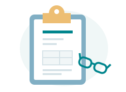

1ЗАПРОСИТЕ РАСЧЁТ СТОИМОСТИ
Если вы заинтересованы в наших услугах, нажмите «ЗАПРОСИТЕ РАСЧЁТ СТОИМОСТИ», чтобы заполнить форму и загрузить основные документы.
Начните с формы обращения. Порядок предоставления документов будет сообщён после связи с нами.